Chapter 6 The circos.heatmap() function
Circular heatmaps are pretty. With circlize package, it is possible to
implement circular heatmaps by the low-level function circos.rect() as
described in previous Chapter. From version 0.4.10, there is a new high-level function
circos.heatmap() which greatly simplifies the creation of circular heatmaps. In this
section, I will demostrate the usage of the new circos.heatmap() function.
First let’s generate a random matrix and randomly split it into five groups.
set.seed(123)
mat1 = rbind(cbind(matrix(rnorm(50*5, mean = 1), nr = 50),
matrix(rnorm(50*5, mean = -1), nr = 50)),
cbind(matrix(rnorm(50*5, mean = -1), nr = 50),
matrix(rnorm(50*5, mean = 1), nr = 50))
)
rownames(mat1) = paste0("R", 1:100)
colnames(mat1) = paste0("C", 1:10)
mat1 = mat1[sample(100, 100), ] # randomly permute rows
split = sample(letters[1:5], 100, replace = TRUE)
split = factor(split, levels = letters[1:5])Following plot is the normal layout of the heatmap (by the ComplexHeatmap package).
Figure 6.1: A normal heatmap.
In the next sections, I will demonstrate how to visualize it circularly.
6.1 Input data
The input for circos.heatmap() should be a matrix (or a vector which will be
converted to a one-column matrix). If the matrix is split into groups, a
categorical variable must be specified with the split argument. Note the
value of spilt should be a character vector or a factor. If it is a numeric
vector, it is converted to characters internally.
Colors are important aesthetic mappings for the values in the matrix. In
circos.heatmap(), users must specify col argument with a user-defined
color schema. If the matrix is continuous numeric, value for col should be a
color mapping generated by colorRamp2(), and if
the matrix is in characters, value of col should be a named color vector.
Following plot is the circular version of the previous heatmap. Note the matrix rows distribute in the circular direction and the matrix columns distribute in the radical direction. In following plot, the circle is split into five sectors where each sector corresponds to one row group.
library(circlize) # >= 0.4.10
col_fun1 = colorRamp2(c(-2, 0, 2), c("blue", "white", "red"))
circos.heatmap(mat1, split = split, col = col_fun1)Figure 6.2: A circular heatmap which has been split.
There is one thing very important that is after creating the circular heatmap,
you must call circos.clear() to remove the layout completely. I will explain
this point later in this post.
If split is not specified, there is only one big sector that contains
the complete heatmap.

Figure 6.3: A circular heatmap which no split.
6.2 Circular layout
Similar as other circular plots generated by circlize package, the circular layout
can be controlled by circos.par() before making the plot.
The parameters for the heatmap track can be controlled in circos.heatmap() function,
such as track.height (height of the track) and bg.border (border of the track).
In the following example, The labels for the sectors are added by setting the
show.sector.labels argument. The order of sectors is c("a", "b", "c", "d", "e") clock-wisely. You can see in the following plot, sector a starts
from \(\theta = 90^{\circ}\).
circos.par(start.degree = 90, gap.degree = 10)
circos.heatmap(mat1, split = split, col = col_fun1, track.height = 0.4,
bg.border = "green", bg.lwd = 2, bg.lty = 2, show.sector.labels = TRUE)Figure 6.4: Circular heatmap. Control the layout.
If the value for split argument is a factor, the order of the factor levels
controls the order of heatmaps. If split is a simple vector, the order of
heatmaps is unique(split).
# note since circos.clear() was called in the previous plot,
# now the layout starts from theta = 0 (the first sector is 'e')
circos.heatmap(mat1, split = factor(split, levels = c("e", "d", "c", "b", "a")),
col = col_fun1, show.sector.labels = TRUE)Figure 6.5: Circular heatmap. Control the order of heatmaps.
6.3 Dendrograms and row names
By default, the numeric matrix is clustered on rows, thus, there are
dendrograms generated from the clustering. dend.side argument controls the
position of dendrograms relative to the heatmap track. Note, the dendrograms
are on a separated track.
circos.heatmap(mat1, split = split, col = col_fun1, dend.side = "inside")
circos.clear()
circos.heatmap(mat1, split = split, col = col_fun1, dend.side = "outside")
circos.clear()Figure 6.6: Circular heatmap. Control the dendrograms.
The height of the dendrograms is controlled by dend.track.height argument.
Row names of the matrix can be drawn by setting rownames.side argument.
Row names are also drawn in a separated track.
circos.heatmap(mat1, split = split, col = col_fun1, rownames.side = "inside")
circos.clear()
text(0, 0, 'rownames.side = "inside"')
circos.heatmap(mat1, split = split, col = col_fun1, rownames.side = "outside")
circos.clear()
text(0, 0, 'rownames.side = "outside"')Figure 6.7: Circular heatmap. Control the row names.
Row names of the matrix and the dendrograms can be both drawn. Of course, they cannot be on the same side of the heatmap track.
circos.heatmap(mat1, split = split, col = col_fun1, dend.side = "inside",
rownames.side = "outside")
circos.clear()
circos.heatmap(mat1, split = split, col = col_fun1, dend.side = "outside",
rownames.side = "inside")
circos.clear()
Figure 6.8: Circular heatmap. Control both the dendrograms and row names.
Graphic parameters for row names can be set as a scalar or a vector with the length same as the number of rows in the matrix.
circos.heatmap(mat1, split = split, col = col_fun1, rownames.side = "outside",
rownames.col = 1:nrow(mat1) %% 10 + 1,
rownames.cex = runif(nrow(mat1), min = 0.3, max = 2),
rownames.font = 1:nrow(mat1) %% 4 + 1)Figure 6.9: Circular heatmap. Control graphic parameters for row names.
The graphic parameters of dendrogram can be set by directly rendering the dendrograms through a callback function, as will be demonstrated later.
6.4 Clustering
By default, the numeric matrix is clustered on rows. cluster argument
can be set to FALSE to turn off the clustering.
Of cource, when cluster is set to FALSE, no dendrogram is drawn even
if dend.side is set.
Figure 6.10: Circular heatmap. Control clusterings.
Clustering method and distance method are controlled by clustering.method
and distance.method arguments.
Please note circos.heatmap() does not directly support clustering on
matrix columns. You should apply column reordering before send to
circos.heatmap(), e.g.,
6.5 Callback on dendrograms
The clustering generates dendrograms. Callback function can be applied to every dendrogram after it is generated in the corresponding sector. The callback function edits the dendrograms such as 1. reorder the dendrogrmas, or 2. color the dendrograms.
In circos.heatmap(), a user-defined function should be set to
dend.callback argument. The user-defined function should have three
arguments:
dend: The dendrogram in the current sector.m: The sub-matrix that corresponds to the current sector.si: The sector index (or the sector name) for the current sector.
The default callback function is defined as follows and it reorders the dendrogram by weighting the matrix row means.
Following example reorders the dendrograms in every sector by dendsort::dendsort().
library(dendsort)
circos.heatmap(mat1, split = split, col = col_fun1, dend.side = "inside",
dend.callback = function(dend, m, si) {
dendsort(dend)
}
)
circos.clear()
Figure 6.11: Circular Heatmap. Reorder dendrograms.
We can use color_branches() from dendextend package to render the
dendrogram edges. E.g., to assign different colors for the dendrograms in
the five sectors. Here the height of the dendrogram track is increased
by the dend.track.height argument.
library(dendextend)
dend_col = structure(1:5, names = letters[1:5])
circos.heatmap(mat1, split = split, col = col_fun1, dend.side = "inside",
dend.track.height = 0.2,
dend.callback = function(dend, m, si) {
# when k = 1, it renders one same color for the whole dendrogram
color_branches(dend, k = 1, col = dend_col[si])
}
)Figure 6.12: Circular heatmap. Render dendrograms that were split.
Or if the matrix is not split, we can assign the sub-dendrograms with different colors.
circos.heatmap(mat1, col = col_fun1, dend.side = "inside",
dend.track.height = 0.2,
dend.callback = function(dend, m, si) {
color_branches(dend, k = 4, col = 2:5)
}
)Figure 6.13: Circular heatmap. Render dendrograms.
6.6 Multiple heatmap tracks
If you make a circular plot which only contains one heatmap track, using
circos.heatmap() is very straightforward. If you make a more complex
circular plot which contains multiple tracks, there are more details on
circos.heatmap() you should know.
The first call of circos.heatmap() actually initializes the layout, i.e.,
applying clustering and splitting the matrix. The dendrograms and split
variable are stored internally. This is why you should explicitly call
circos.clear() to remove all the internal variables so that it can ensure
when you make a new circular heatmap, the first call of circos.heatmap() is
in a clean environment.
The first call of circos.heatmap() determines the row ordering (the order in
the circular direction) for all tracks, thus, matrices in the following tracks
share the same row ordering as in the first track. Also, the matrices in the
following tracks are also split accordingly to the split in the first heatmap
track.
If clustering is not applied in the first heatmap track, the natural ordering
of rows (i.e., c(1, 2, ..., n)) is used.
mat2 = mat1[sample(100, 100), ] # randomly permute mat1 by rows
col_fun2 = colorRamp2(c(-2, 0, 2), c("green", "white", "red"))
circos.heatmap(mat1, split = split, col = col_fun1, dend.side = "outside")
circos.heatmap(mat2, col = col_fun2)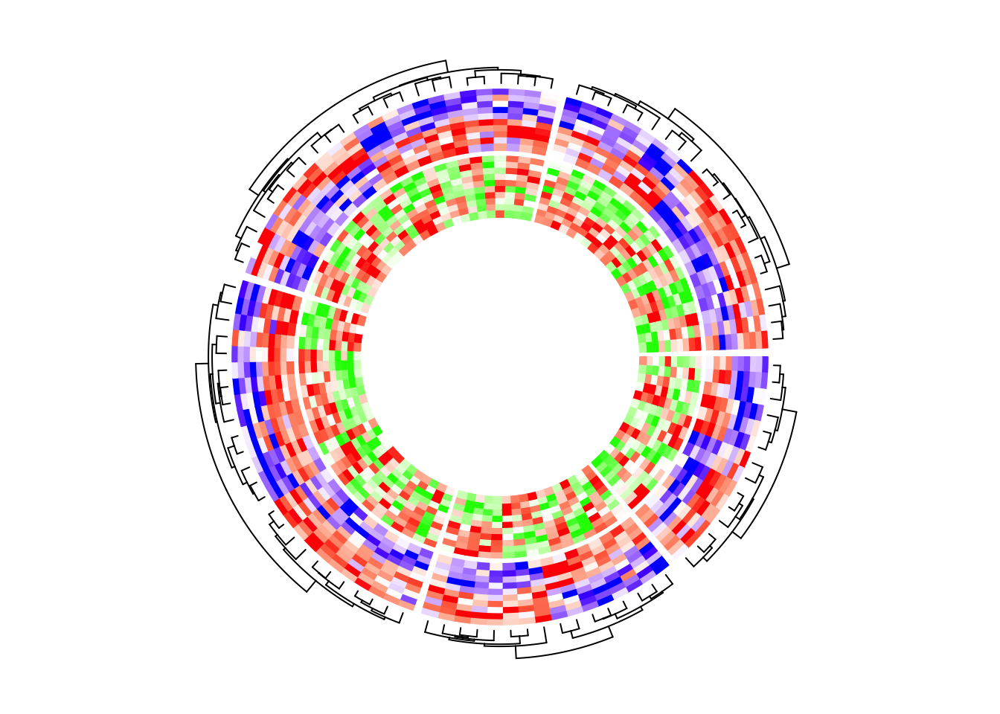
If I switch the two tracks, you can see now the clustering is controlled by the first heatmap track which is the green-red heatmap track.
circos.heatmap(mat2, split = split, col = col_fun2, dend.side = "outside")
circos.heatmap(mat1, col = col_fun1)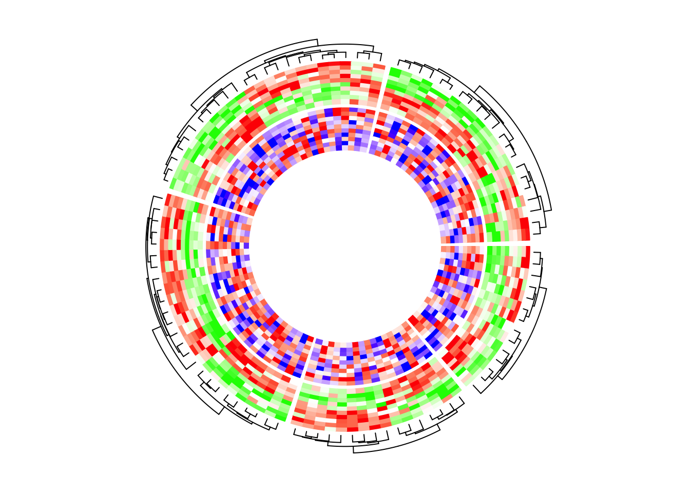
You might want to ask, what if I don’t want the clustering to be determined by
the first track, while the second or the third track? The solution is simple.
As I mentioned, the first call of circos.heatmap() initializes the layout.
Actually the initialization can be manually done by explicitly calling
circos.heatmap.initialize() function which circos.heatmap() internally
calls.
In circos.heatmap.initialize(), you specify whatever matrix you want to
apply clustering as well as the split variable, then, the following
circos.heatmap() calls all share this layout.
In the following example, the global layout is determined by mat1 which is
visualized in the second track. I set dend.side = "outside" in the first
track and actually you can find the dendrograms are actually generatd based
on the matrix in the second track.
circos.heatmap.initialize(mat1, split = split)
circos.heatmap(mat2, col = col_fun2, dend.side = "outside")
circos.heatmap(mat1, col = col_fun1)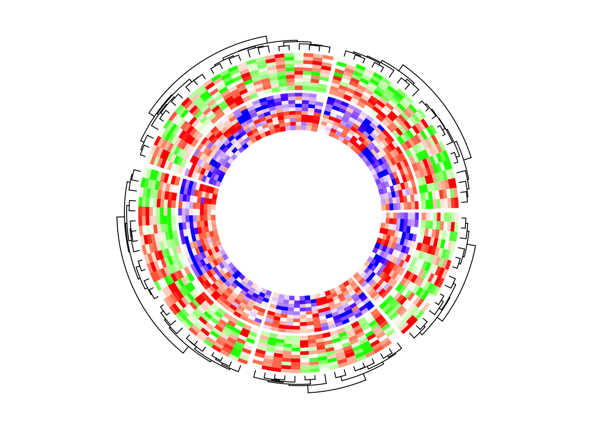
In the next example, the heatmap layout is generated from mat1, while
the two heatmap tracks only contain five columns for each.
circos.heatmap.initialize(mat1, split = split)
circos.heatmap(mat1[, 1:5], col = col_fun1)
circos.heatmap(mat1[, 6:10], col = col_fun1)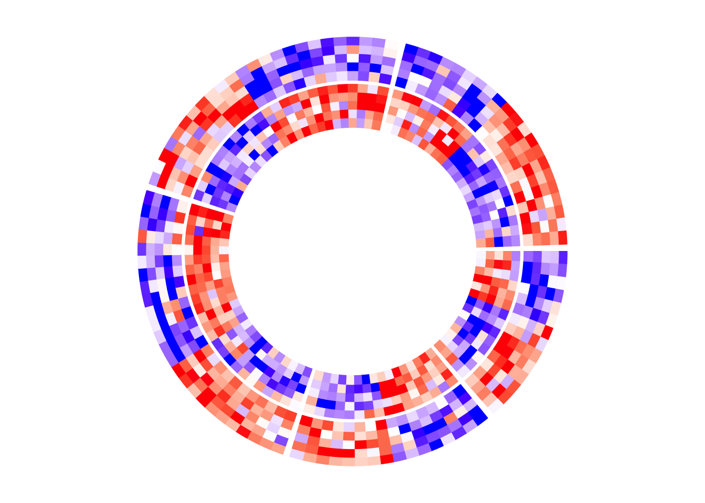
6.7 With other tracks
circos.heatmap() can also be integrated with other non-heatmap tracks,
however, it is a little bit tricky. In the circular layout, values on x-axes
and y-axes are just the numeric indices. Assume there are nr rows and nc
columns for the heatmap in a sector, the heatmap rows are drawn in intervals
of (0, 1), c(1, 2), …, c(nr-1, nr) and similar for the heatmap
columns. Also the original matrix is reordered. All these effects need to be
considered if more tracks are added to make sure to have the correct
correspondance to the heatmap track.
After the heatmap layout is done, additional information for the
tracks/sectors/cells can be retrieved by the special variable CELL_META. The
additional meta data for the cell/sector are listed as follows and they are
important for correctly corresponding to the heatmap track.
CELL_META$row_dendor simplyCELL_META$dend: the dendrogram in the current sector. If no clustering was done, the value isNULL.CELL_META$row_orderor simplyCELL_META$order: the row ordering of the sub-matrix in the current sector after clustering. If no clustering was done, the value isc(1, 2, ..., ).CELL_META$subset: The subset of indices in the original complete matrix. The values are sorted increasing.
Following are the outputs of CELL_META$row_dend, CELL_META$row_order
and CELL_META$subset in the first sector in the example circular heatmap.
CELL_META$row_dend
## 'dendrogram' with 2 branches and 14 members total, at height 10.51736
CELL_META$row_order
## [1] 2 6 4 12 8 1 5 10 7 9 13 11 3 14
CELL_META$subset
## [1] 8 9 14 18 20 37 55 62 66 72 78 85 93 97In following example, I add a track which visualizes the row means of the
first five columns in mat1. I added cell.padding = c(0.02, 0, 0.02, 0) so
that the maximal and minimal points won’t overlap with the top and bottom
borders of the cells.
circos.heatmap(mat1, split = split, col = col_fun1)
row_mean = rowMeans(mat1[, 1:5])
circos.track(ylim = range(row_mean), panel.fun = function(x, y) {
y = row_mean[CELL_META$subset]
y = y[CELL_META$row_order]
circos.lines(CELL_META$cell.xlim, c(0, 0), lty = 2, col = "grey")
circos.points(seq_along(y) - 0.5, y, col = ifelse(y > 0, "red", "blue"))
}, cell.padding = c(0.02, 0, 0.02, 0))
Similarly, if the points track is put as the first track, the layout should be initialized in advance.
circos.heatmap.initialize(mat1, split = split)
# This is the same as the previous example
circos.track(ylim = range(row_mean), panel.fun = function(x, y) {
y = row_mean[CELL_META$subset]
y = y[CELL_META$row_order]
circos.lines(CELL_META$cell.xlim, c(0, 0), lty = 2, col = "grey")
circos.points(seq_along(y) - 0.5, y, col = ifelse(y > 0, "red", "blue"))
}, cell.padding = c(0.02, 0, 0.02, 0))
circos.heatmap(mat1, col = col_fun1) # no need to specify 'split' here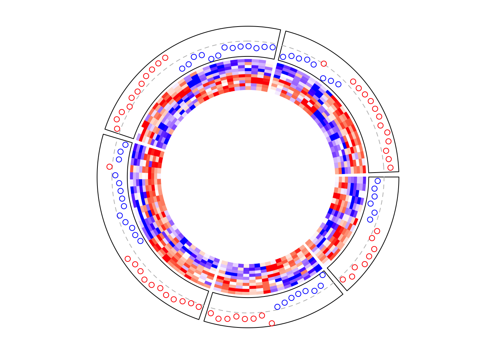
Boxplots are very frequently used to correspond to the matrix rows.
circos.heatmap(mat1, split = split, col = col_fun1)
circos.track(ylim = range(mat1), panel.fun = function(x, y) {
m = mat1[CELL_META$subset, 1:5, drop = FALSE]
m = m[CELL_META$row_order, , drop = FALSE]
n = nrow(m)
# circos.boxplot is applied on matrix columns, so here we transpose it.
circos.boxplot(t(m), pos = 1:n - 0.5, pch = 16, cex = 0.3)
circos.lines(CELL_META$cell.xlim, c(0, 0), lty = 2, col = "grey")
}, cell.padding = c(0.02, 0, 0.02, 0))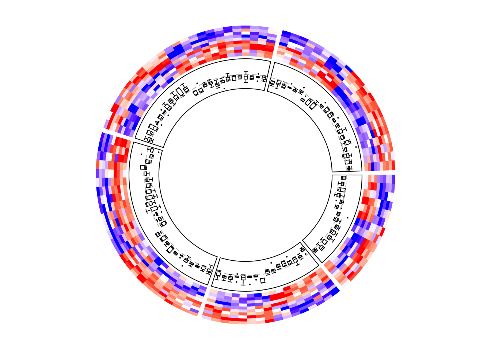
6.8 Add annotations
The labels for the sectors can be added by setting show.sector.labels = TRUE,
however, this does not provide any customization on the labels. Users can
customize their own labels by self-defining a panel.fun function,
demonstrated as follows. Here the labels are added 2mm away from the
heatmap track (by convert_y(2, "mm") which defines the offset in the y-direction).
circos.heatmap(mat1, split = split, col = col_fun1)
circos.track(track.index = 1, panel.fun = function(x, y) {
circos.text(CELL_META$xcenter, CELL_META$cell.ylim[2] + convert_y(2, "mm"),
paste0("this is group ", CELL_META$sector.index),
facing = "bending.inside", cex = 0.8,
adj = c(0.5, 0), niceFacing = TRUE)
}, bg.border = NA)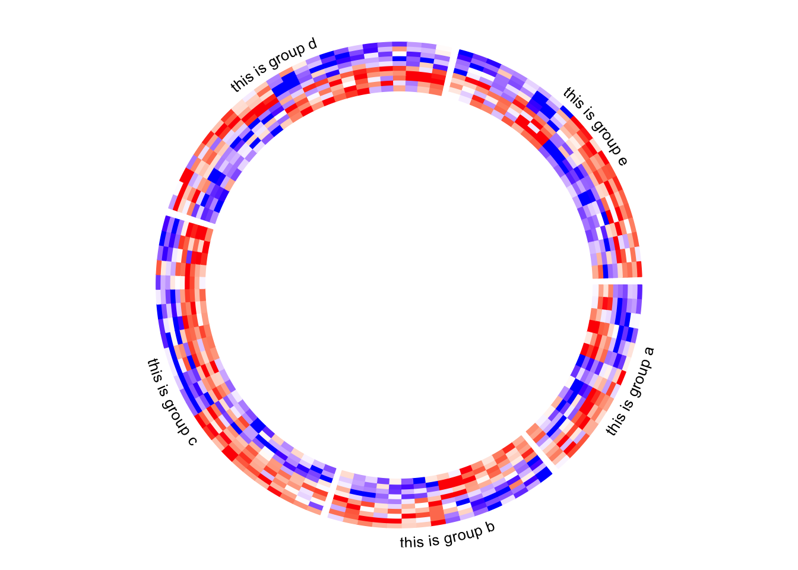
Column names of the matrix are not directly supported by circos.heatmap(),
but they can be easily added also by self-defining a panel.fun function. In
followig example, I set larger space (10 degrees, users normally need to try
several values to get a best space) after the last sector (the fifth sector)
by gap.after parameter in circos.par(), later I draw the column names in
the last sector in panel.fun.
circos.par(gap.after = c(2, 2, 2, 2, 10))
circos.heatmap(mat1, split = split, col = col_fun1, track.height = 0.4)
circos.track(track.index = 1, panel.fun = function(x, y) {
if(CELL_META$sector.numeric.index == 5) { # the last sector
cn = colnames(mat1)
n = length(cn)
circos.text(rep(CELL_META$cell.xlim[2], n) + convert_x(1, "mm"),
1:n - 0.5, cn,
cex = 0.5, adj = c(0, 0.5), facing = "inside")
}
}, bg.border = NA)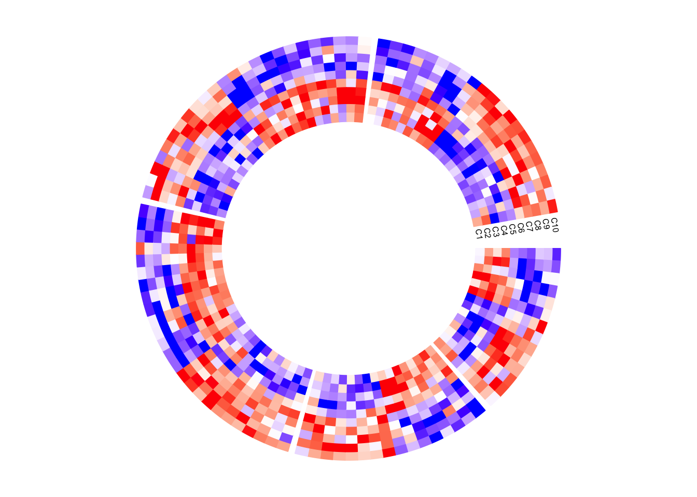
Next example adds rectangles and labels to show the two groups of columns in
the matrix. The code inside panel.fun is simple. It basically draws
rectangles and texts. convert_x() converts a unit on the x-direction to a
proper value measured in tbe circular coordinate system.
circos.par(gap.after = c(2, 2, 2, 2, 10))
circos.heatmap(mat1, split = split, col = col_fun1, track.height = 0.4)
circos.track(track.index = 1, panel.fun = function(x, y) {
if(CELL_META$sector.numeric.index == 5) { # the last sector
circos.rect(CELL_META$cell.xlim[2] + convert_x(1, "mm"), 0,
CELL_META$cell.xlim[2] + convert_x(5, "mm"), 5,
col = "orange", border = NA)
circos.text(CELL_META$cell.xlim[2] + convert_x(3, "mm"), 2.5,
"group 1", cex = 0.5, facing = "clockwise")
circos.rect(CELL_META$cell.xlim[2] + convert_x(1, "mm"), 5,
CELL_META$cell.xlim[2] + convert_x(5, "mm"), 10,
col = "pink", border = NA)
circos.text(CELL_META$cell.xlim[2] + convert_x(3, "mm"), 7.5,
"group 2", cex = 0.5, facing = "clockwise")
}
}, bg.border = NA)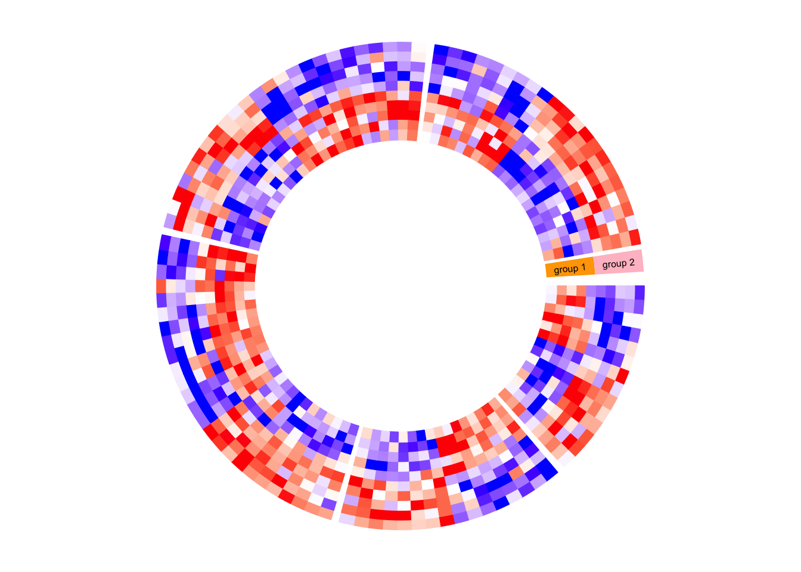
circlize does not generates legends, but the legends can be manually
generated by ComplexHeatmap::Legend() function and added to the
circular plot.
Following is a simple example of adding a legend. In the next section, you can
find a more complex example of adding many legends.
circos.heatmap(mat1, split = split, col = col_fun1)
circos.clear()
library(ComplexHeatmap)
lgd = Legend(title = "mat1", col_fun = col_fun1)
grid.draw(lgd)
6.9 A complex example of circular heatmaps
In this section, I will demonstrate how to make complex circular heatmaps. The heatmaps in the normal layout are in the following figure and now I will change them with the circular layout.
The heatmaps visualize correlations between DNA methylation, gene expression and other genome-level information. You can go to this link to see how the original heatmaps were generated.

The original heatmaps were generated with random datasets. The code for generating them is available at https://gist.github.com/jokergoo/0ea5639ee25a7edae3871ed8252924a1. Here I just directly source the script from Gist.
source("https://gist.githubusercontent.com/jokergoo/0ea5639ee25a7edae3871ed8252924a1/raw/57ca9426c2ed0cebcffd79db27a024033e5b8d52/random_matrices.R")Similar as the original heatmap, rows of all heatmaps are split into 5 groups
by applying k-means clustering on rows of the methylation matrix
(mat_meth).
Now there are following matrices/vectors that need to be visualized as heatmaps:
mat_meth: a matrix in which rows correspond to differetially methylated regions (DMRs). The value in the matrix is the mean methylation level in the DMR in every sample.mat_expr: a matrix in which rows correspond to genes which are associated to the DMRs (i.e. the nearest gene to the DMR). The value in the matrix is the expression level for each gene in each sample. Expression is scaled for every gene across samples.direction: direction of the methylation change (hyper meaning higher methylation in tumor samples, hypo means lower methylation in tumor samples).cor_pvalue: p-value for the correlation test between methylation and expression of the associated gene. Values are -log10 transformed.gene_type: type of the genes (e.g., protein coding genes or lincRNAs).anno_gene: annotation to the gene models (i.e., intergenic, intragenic or transcription start site (TSS)).dist: distance from DMRs to TSS of the assiciated genes.anno_enhancer: fraction of each DMR that overlaps enhancers.
Among these variables, mat_meth, mat_expr, cor_pvalue, dist and anno_enhancer are numeric
and I set color mapping functions for them. For the others I set named color vectors.
In the following code, I specify split in the first call of circos.heatmap() which
is the methylation heatmap. The track heights are manually adjusted.
col_meth = colorRamp2(c(0, 0.5, 1), c("blue", "white", "red"))
circos.heatmap(mat_meth, split = km, col = col_meth, track.height = 0.12)
col_direction = c("hyper" = "red", "hypo" = "blue")
circos.heatmap(direction, col = col_direction, track.height = 0.01)
col_expr = colorRamp2(c(-2, 0, 2), c("green", "white", "red"))
circos.heatmap(mat_expr, col = col_expr, track.height = 0.12)
col_pvalue = colorRamp2(c(0, 2, 4), c("white", "white", "red"))
circos.heatmap(cor_pvalue, col = col_pvalue, track.height = 0.01)
library(RColorBrewer)
col_gene_type = structure(brewer.pal(length(unique(gene_type)), "Set3"), names = unique(gene_type))
circos.heatmap(gene_type, col = col_gene_type, track.height = 0.01)
col_anno_gene = structure(brewer.pal(length(unique(anno_gene)), "Set1"), names = unique(anno_gene))
circos.heatmap(anno_gene, col = col_anno_gene, track.height = 0.01)
col_dist = colorRamp2(c(0, 10000), c("black", "white"))
circos.heatmap(dist, col = col_dist, track.height = 0.01)
col_enhancer = colorRamp2(c(0, 1), c("white", "orange"))
circos.heatmap(anno_enhancer, col = col_enhancer, track.height = 0.03)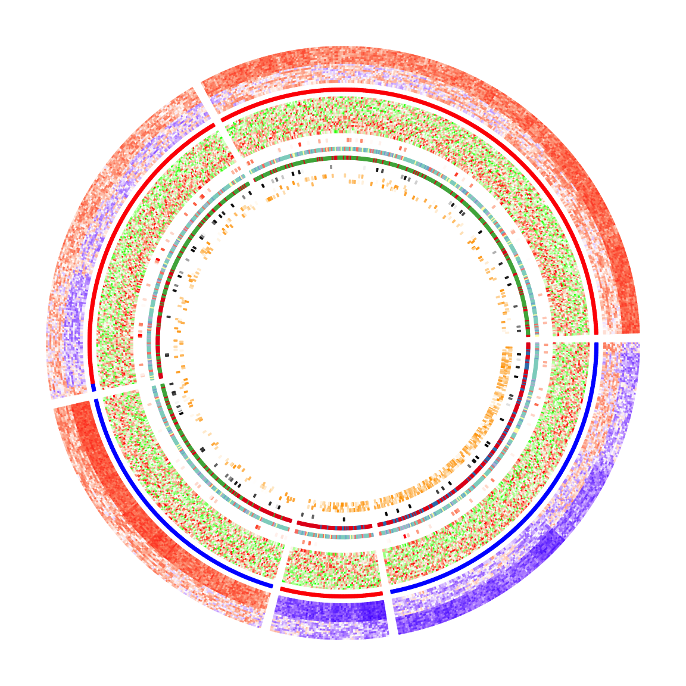
The circular heatmaps look pretty! Since rows in the matrices are genomic regions (the differentially methylated regions), if we can establish connections between some of the regions, e.g. physical interactions in the 3D chromosome structure, the plot would be nicer and more useful.
In following code, I generate some random interactions between DMRs.
Each row in df_link means there is an interaction from the ith DMR
to the jth DMR.
df_link = data.frame(
from_index = sample(nrow(mat_meth), 20),
to_index = sample(nrow(mat_meth), 20)
)Finding the positions of these DMRs on the circular heatmaps is tricky.
Check the comments in the following code. Note here the subset and
row_order meta data are retrieved by get.cell.meta.data() function
by explicitly specifying the sector index.
for(i in seq_len(nrow(df_link))) {
# Let's call the DMR with index df_link$from_index[i] as DMR1,
# and the other one with index df_link$to_index[i] as DMR2.
# The sector where DMR1 is in.
group1 = km[ df_link$from_index[i] ]
# The sector where DMR2 is in.
group2 = km[ df_link$to_index[i] ]
# The subset of DMRs (row indices from mat_meth) in sector `group1`.
subset1 = get.cell.meta.data("subset", sector.index = group1)
# The row ordering in sector `group1`.
row_order1 = get.cell.meta.data("row_order", sector.index = group1)
# This is the position of DMR1 in the `group1` heatmap.
x1 = which(subset1[row_order1] == df_link$from_index[i])
# The subset of DMRs (row indices from mat_meth) in sector `group2`.
subset2 = get.cell.meta.data("subset", sector.index = group2)
# The row ordering in sector `group2`.
row_order2 = get.cell.meta.data("row_order", sector.index = group2)
# This is the position of DMR2 in the `group2` heatmap.
x2 = which(subset2[row_order2] == df_link$to_index[i])
# We take the middle point and draw a link between DMR1 and DMR2
circos.link(group1, x1 - 0.5, group2, x2 - 0.5, col = rand_color(1))
}To make things easier, I implemented a function circos.heatmap.link() that basically
wraps the code above. Now drawing links between matrix rows is simpler:
for(i in seq_len(nrow(df_link))) {
circos.heatmap.link(df_link$from_index[i],
df_link$to_index[i],
col = rand_color(1))
}After adding the links, the plots look nicer!
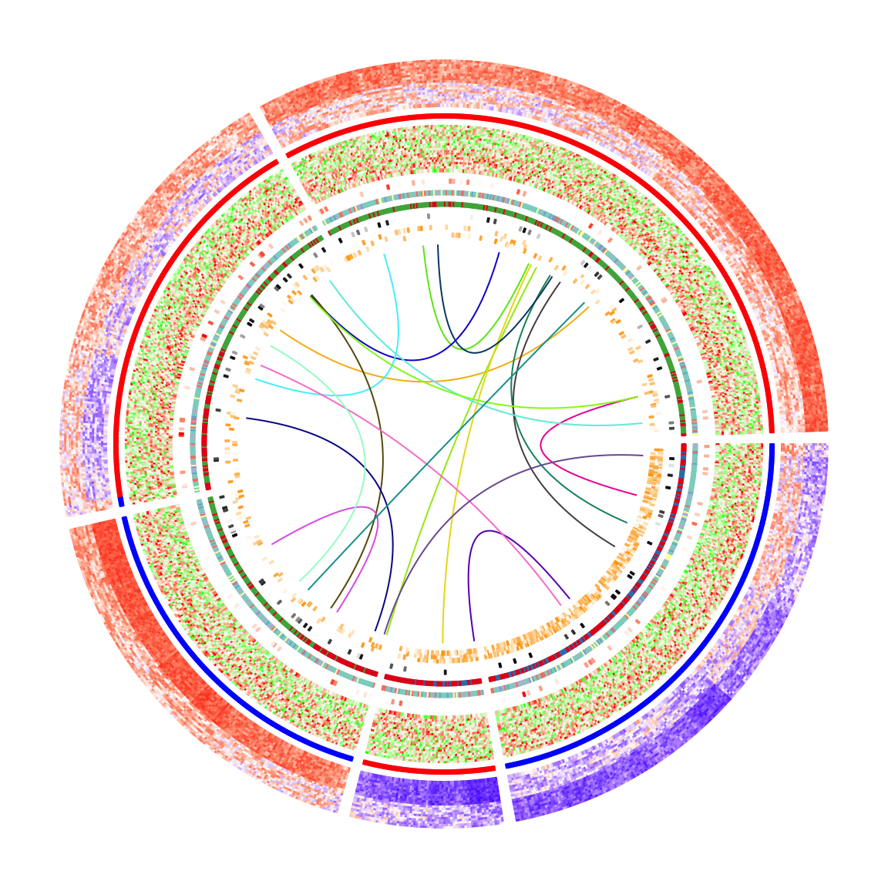
Legends are important for understanding heatmaps. Unfortunately, circlize
does not naturally support legends, however, the circlize plots can be
combined with the legends generated from
ComplexHeatmap::Legend().
Following the instructions from that link, we need a function that draws the
circlize plot and a Legends object (which is a grid::grob object).
The function that draws the circular plot is simply a wrapper of the previous code without any modification.
circlize_plot = function() {
circos.heatmap(mat_meth, split = km, col = col_meth, track.height = 0.12)
circos.heatmap(direction, col = col_direction, track.height = 0.01)
circos.heatmap(mat_expr, col = col_expr, track.height = 0.12)
circos.heatmap(cor_pvalue, col = col_pvalue, track.height = 0.01)
circos.heatmap(gene_type, col = col_gene_type, track.height = 0.01)
circos.heatmap(anno_gene, col = col_anno_gene, track.height = 0.01)
circos.heatmap(dist, col = col_dist, track.height = 0.01)
circos.heatmap(anno_enhancer, col = col_enhancer, track.height = 0.03)
for(i in seq_len(nrow(df_link))) {
circos.heatmap.link(df_link$from_index[i],
df_link$to_index[i],
col = rand_color(1))
}
circos.clear()
}The legends can be generated from the color mapping functions and color vectors.
The ComplexHeatmap::Legend() function is very flexible that you can customize
the labels on the legends (see how lgd_pvalue, lgd_dist and lgd_enhancer are
defined).
lgd_meth = Legend(title = "Methylation", col_fun = col_meth)
lgd_direction = Legend(title = "Direction", at = names(col_direction),
legend_gp = gpar(fill = col_direction))
lgd_expr = Legend(title = "Expression", col_fun = col_expr)
lgd_pvalue = Legend(title = "P-value", col_fun = col_pvalue, at = c(0, 2, 4),
labels = c(1, 0.01, 0.0001))
lgd_gene_type = Legend(title = "Gene type", at = names(col_gene_type),
legend_gp = gpar(fill = col_gene_type))
lgd_anno_gene = Legend(title = "Gene anno", at = names(col_anno_gene),
legend_gp = gpar(fill = col_anno_gene))
lgd_dist = Legend(title = "Dist to TSS", col_fun = col_dist,
at = c(0, 5000, 10000), labels = c("0kb", "5kb", "10kb"))
lgd_enhancer = Legend(title = "Enhancer overlap", col_fun = col_enhancer,
at = c(0, 0.25, 0.5, 0.75, 1), labels = c("0%", "25%", "50%", "75%", "100%"))Now we use the gridBase to combine both base graphics (circlize is implemented with the base graphics) and grid graphics (ComplexHeatmap is implemented with the grid graphics). You can just use the following code as a template for your plot if you want to try.
And, BINGO! Wie schön!!
library(gridBase)
plot.new()
circle_size = unit(1, "snpc") # snpc unit gives you a square region
pushViewport(viewport(x = 0, y = 0.5, width = circle_size, height = circle_size,
just = c("left", "center")))
par(omi = gridOMI(), new = TRUE)
circlize_plot()
upViewport()
h = dev.size()[2]
lgd_list = packLegend(lgd_meth, lgd_direction, lgd_expr, lgd_pvalue, lgd_gene_type,
lgd_anno_gene, lgd_dist, lgd_enhancer, max_height = unit(0.9*h, "inch"))
draw(lgd_list, x = circle_size, just = "left")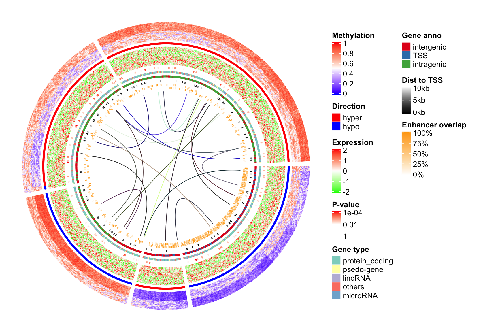